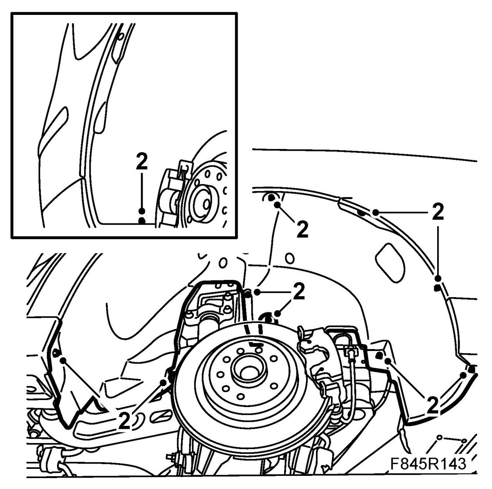
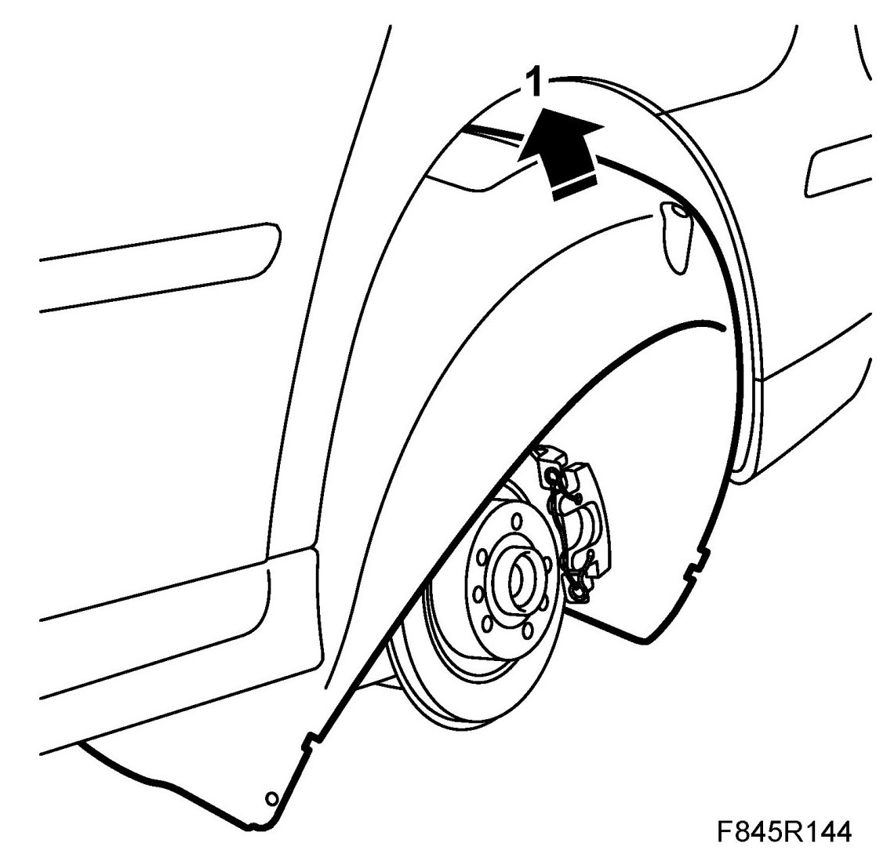
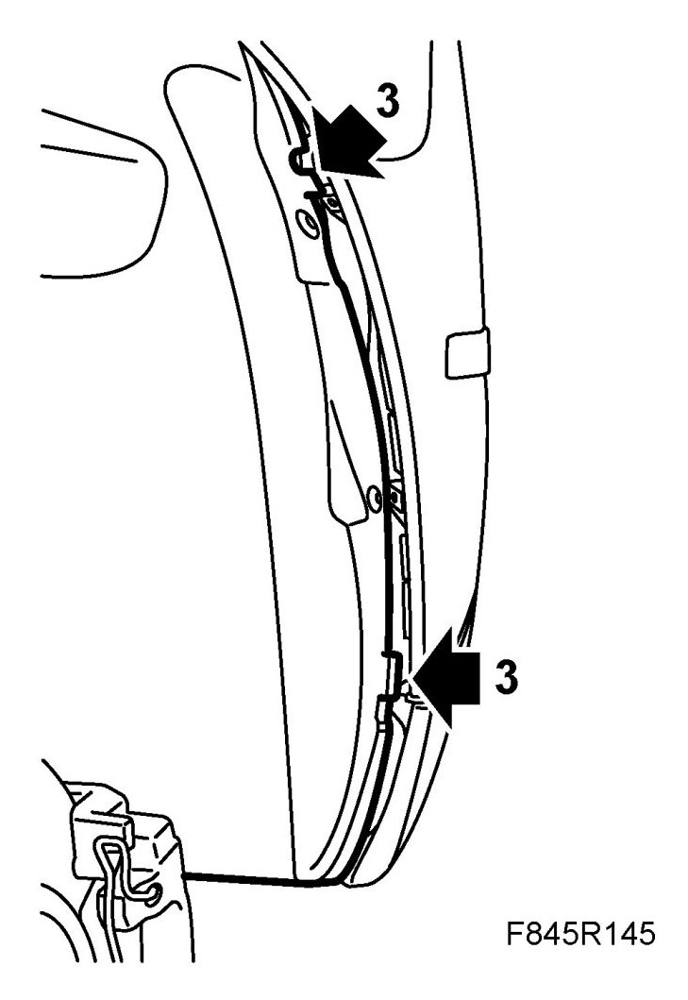
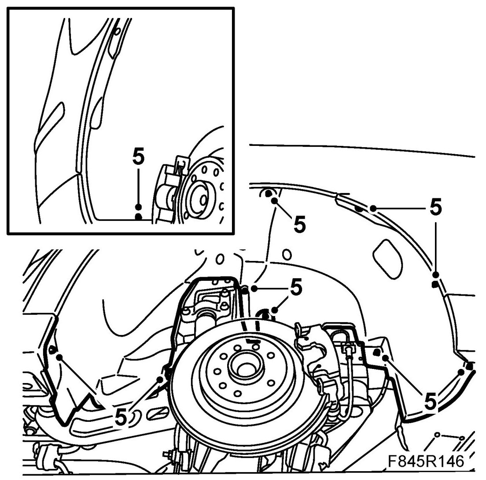

Rear Fender Liner: Service and Repair
Rear Wing Liner
1. Remove the wheel.
2. Remove the nuts and bolts of the wing liner.

3. Detach the wing liner from the studs.
4. Detach the wing liner from the edge of the wing, starting from the back. Detach it little by little from the entire wing edge. Lift it aside.
To fit
1. Angle the wing liner into place. Fit the bottom edges of the liner against the wheel housing.

2. Guide the liner onto the upper stud. Then fit it onto the other studs.
3. Align the wing liner with the edge of the wing and bumper shell. The tabs on the bumper shell should be inside the wing liner.

4. Check the fit of the wing liner.
5. Fit all nuts and bolts.

6. Fit the wheel.